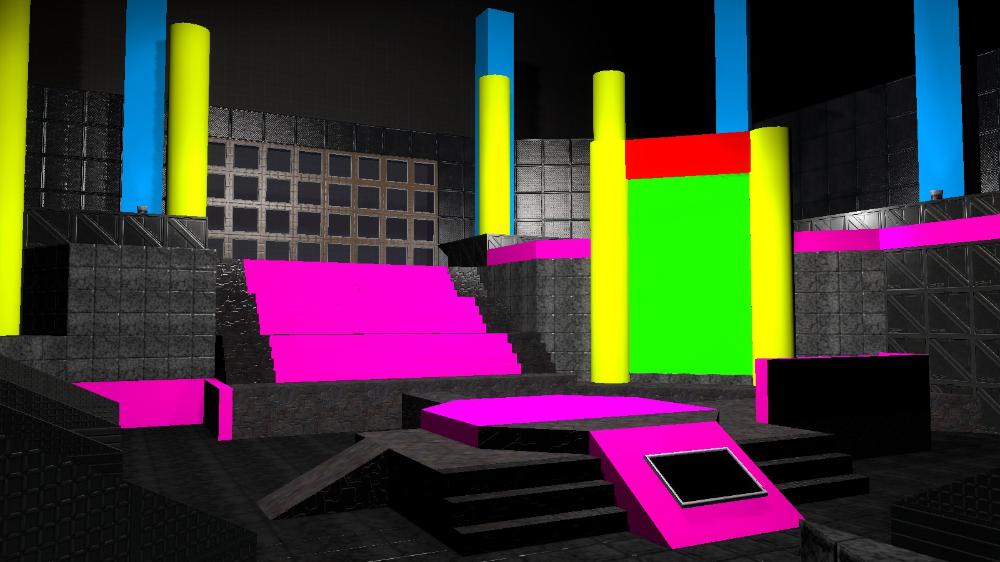
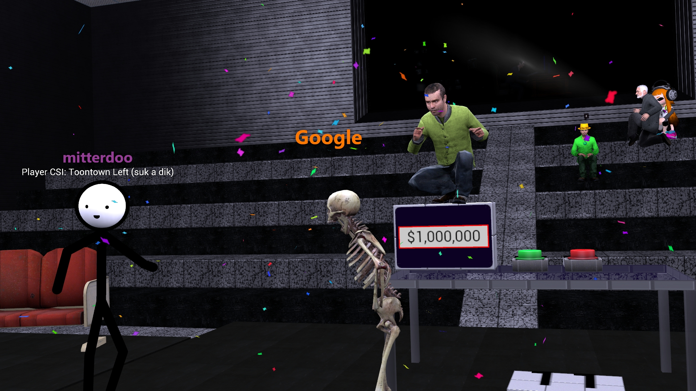
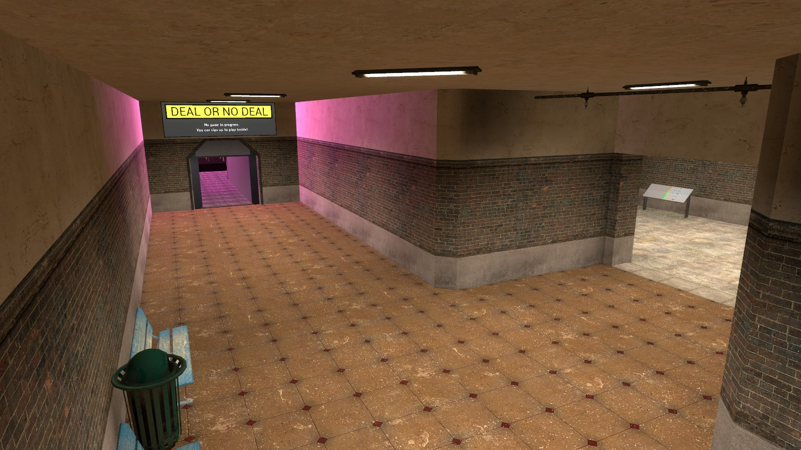

Deal or No Deal is a Metastruct minigame created by mitterdoo. It was originally a television show that inspired the creation in Garry's Mod. This depiction is based off of the American show. The goal of the game is to win a reasonable amount of money from the game.
A rewrite of this minigame is currently being worked on. Many methods are being used to create a better and less repetitive experience in the game. Sounds have been directly ripped from the PC recreation from BigJonPCGames, instead of being recorded from Stereo Mix which is poor quality (and not stereo). The BigJonPCGames recreation executable has been decompiled into legible source code, and most of the dialogue and game mechanics will be derived from it.
Apart from extracting files and code from another recreation of the game, the source code will now be far cleaner than the current, 3,000-line .lua file that handles the entire game. Many new features are planned to be added as well, including, but not limited to: a brand-new stage made after studying the original American game show, offers made by the banker will be substantially more intimidating to the player to take them, a better overall look-and-feel to the UI, and deeper, dynamic dialogue that reacts to current events. Text-to-speech will be gone.
The date at which this rewrite, dubbed DoND 2.0, will be released, is currently unknown. Development has been on-and-off for months, and all of it is being done by one person. We hope you understand, and we hope to let everybody enjoy a newer, cleaner version of this intense game as soon as humanly possible. Progress can be tracked on this Trello board.
The game starts with 26 cases on the stage. Each one has a random value inside it picked from the value board on the right. The player then picks one case to keep to themselves as long as they wish. However, they do not get to see what's inside until the end of the game, and neither does the banker. If the very end of the game is reached (where the player turned down all offers), the player wins whatever is inside their case.
After the player has picked their personal case, they go through rounds of picking remaining cases on the stage and opening them, eliminating their values from the board. Every case opened shows that what's inside is not inside the player's personal case. That being said, it's bad when the player opens a case with a large value inside, and especially bad when the case has a million inside.
There are 9 rounds of eliminating cases. The first one starts with eliminating 6 cases, the second round 5, third 4, and so on until each round eliminates one case at a time. Between these rounds are offers that present the opportunity for the player to sell their case to the banker behind the seats.
Between each round, the banker proposes an offer of money for the player's case. The banker doesn't know what's inside it, either, so he studies your behavior and which values remain on the board. He then reveals his offer to you, where you get to make the choice of the game: Deal, or No Deal?
Should the player accept the banker's offer, they receive their money. If the game has progressed far enough (6 or less values remain), the player gets to see what would have happened if they continued to play the game to determine whether or not they made a good deal. The game progresses, keeping the original offer ready for the player, showing where the offers would have gone if they went on. When there is just one case on stage and the personal case remaining, the player's personal case is opened and revealed. Their case is also revealed immediately if the game hasn't gotten far enough to reveal the rest of the cases.
Otherwise, if the player declines his offer, the game progresses to the next round. If there is only one case on stage and the personal case, the end of the game has been reached, where the player must make one last decision.
When the game has gotten to the point where there's just one more case on the stage at the beginning of a round, the player is left with one more offer: swap their personal case with the remaining case, or keep it? Anything can happen at this point. After this choice has been made, whatever their current personal case is, the player wins what is inside. The player either wins the higher value remaining, or the lowest. If the player wins the million, there is mass celebration, and the game ends.
The Million Dollar Mission is a special addition to Deal or No Deal. Each time a player is picked to start the game, there is a 1 in 300 chance the mission will commence. When the game starts during the mission, another million is added to the board for the player to potentially win. If the player does not win the million, even if it is revealed to be inside their case, yet another million is added for the next game.
There can be at most 13 millions on the board; the whole right side of the board. There is also a possibility of eliminating all values but the millions. When this happens, the player automatically wins the million. As soon as a player wins a million, the mission ends and the value board resets to only one million on it.
This minigame can be played during weekends on any Metastruct server that is running map version 151 and up. You'll know if the map is correct when it has this room in the lobby:
Because the minigame rewards a substantial amount of money in the first offers, players are only permitted to play once per weekend.
When you play Deal or No Deal, you aren't added to the blacklist for the weekend until the amount of money you win is revealed. (taking an offer or opening your case at the end). This keeps server/client crashes from preventing your one game per weekend. However, in order to prevent cheating, you only get two do-overs per weekend.
We know that the render distance for PAC gets messed up. It's a strange bug, strange enough to the point where attempting to isolate the problem is too difficult to do. You can temporarily turn off PAC in the meantime.
Deal or No Deal is equipped with a text-to-speech service to make the game more entertaining. If you don't prefer to have it on, type "dond_tts 0" in console to disable it.